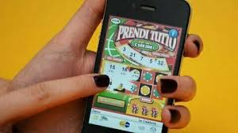
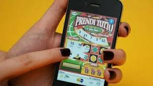
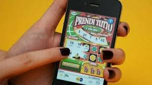

.jpeg)
.jpeg) 

I gratta e vinci online sono la versione digitale dei classici biglietti cartacei venduti in tabaccheria. Si trovano facilmente su siti e app autorizzate, sono immediati, colorati e apparentemente innocui. Ma proprio per la loro accessibilità e rapidità, possono diventare un pericoloso strumento di dipendenza. A differenza dei gratta e vinci tradizionali, quelli online si possono acquistare e giocare in qualsiasi momento, senza limiti di tempo o luogo. Questa facilità aumenta il rischio di perdere il controllo, specialmente nei momenti di noia, solitudine o fragilità emotiva. Ogni “grattata” virtuale promette una vincita veloce, ma nella realtà la probabilità di perdere è altissima, e le piccole vittorie servono solo ad alimentare l’illusione. Molte persone finiscono per spendere cifre elevate in poco tempo, senza nemmeno rendersene conto. Inoltre, il gioco digitale non offre pause naturali: si può ricaricare il conto in pochi secondi e continuare a giocare senza riflettere. Per questo è fondamentale riconoscere i segnali di allarme e promuovere un uso responsabile. Il gioco può diventare un problema serio. Se senti di non avere più il controllo, chiedere aiuto è un atto di forza, non di debolezza.

Mi chiamo Elena, ho 34 anni e voglio raccontare come i gratta e vinci online hanno cambiato — e quasi rovinato — la mia vita. Tutto è cominciato durante un periodo di stress. I gratta e vinci digitali mi sembravano innocui: veloci, economici, accessibili dal telefono. Bastava un clic per provarci ancora. E un altro. E un altro. Non c’erano orari, nessuno sguardo giudicante, solo me e lo schermo. Ogni tanto vincevo piccole somme, che alimentavano l’illusione di poter "recuperare" tutto quello che avevo perso. In realtà, continuavo solo ad affondare. In pochi mesi, ho speso più di quanto voglia ammettere, ho trascurato il lavoro, gli affetti, e ho iniziato a nascondermi. È difficile spiegare quanto subdola possa essere questa dipendenza: non si vede, non fa rumore, ma ti consuma dentro. Ho avuto il coraggio di chiedere aiuto solo quando mi sono accorta che non riuscivo più a smettere da sola. Oggi sto seguendo un percorso terapeutico e cerco di sensibilizzare chi, come me, ha pensato che “è solo un gioco”. I gratta e vinci online non sono un passatempo innocente se non si conoscono i propri limiti. La consapevolezza può salvarti.
| Nome del Gioco | Prezzo Biglietto | Vincita Massima | Probabilità di Vincita* |
|---|---|---|---|
| Numerissimi | 5 € | 500.000 € | 1 su 3,06 |
| Il Miliardario | 5 € | 500.000 € | 1 su 3,18 |
| Tutto per Tutto | 10 € | 2.000.000 € | 1 su 3,45 |
| Portafortuna | 2 € | 100.000 € | 1 su 4,56 |
*Le probabilità indicate si riferiscono alla possibilità di vincere almeno un premio, anche minimo. Più basso è il rapporto, maggiori sono le possibilità di vincita. Tuttavia, anche nei giochi con probabilità più favorevoli, il margine di perdita resta elevato. I Gratta e Vinci sono giochi d'azzardo e devono essere affrontati con attenzione e consapevolezza.
I Gratta e Vinci online sono la versione digitale dei tradizionali biglietti cartacei e possono essere giocati legalmente solo su siti autorizzati. Alcuni dei portali più affidabili dove è possibile trovarli sono Lottomatica, Sisal, Snai e Goldbet. Questi siti sono autorizzati dall'Agenzia delle Dogane e dei Monopoli (ADM) e offrono giochi certificati e controllati. Anche se facili da giocare, i Gratta e Vinci online possono creare dipendenza: è essenziale giocare in modo responsabile e ricordare che il gioco è vietato ai minori di 18 anni.